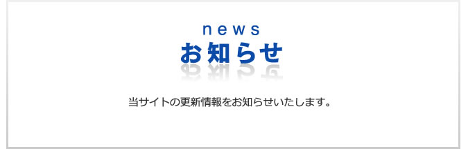

アパート建築・サブリース管理でオーナー様の資産運用をご提案するアミックス

東北地方太平洋沖地震の発生に際し、心よりお見舞い申し上げます。
３月11日に発生した大地震につきまして、当該地域において被災されたみなさまに心よりお見舞い申し上げるとともに、一日も早いご回復をお祈りいたしております。
なお、東京電力の計画停電に際して、今後、当社管理物件におきましても停電が発生する可能性がございます。
入居者のみなさまにはご不便をおかけいたしますが、ご了承いただきますようお願い申し上げます。停電の時間等は、テレビ・ラジオ・インターネット等で最新の情報をご確認いただきますようお願いいたします。